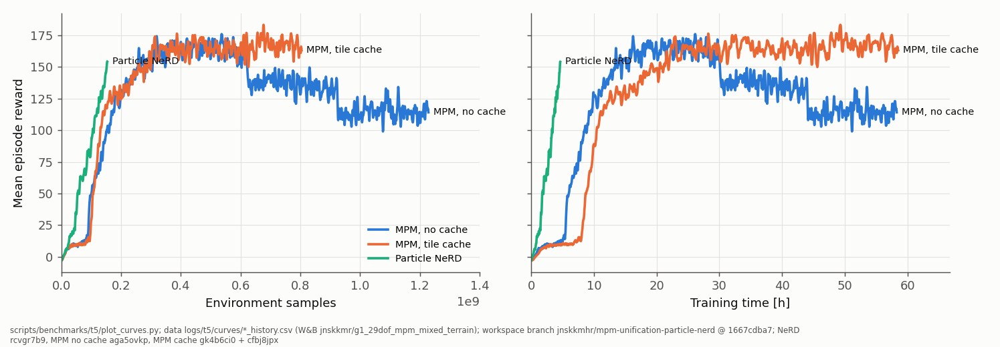
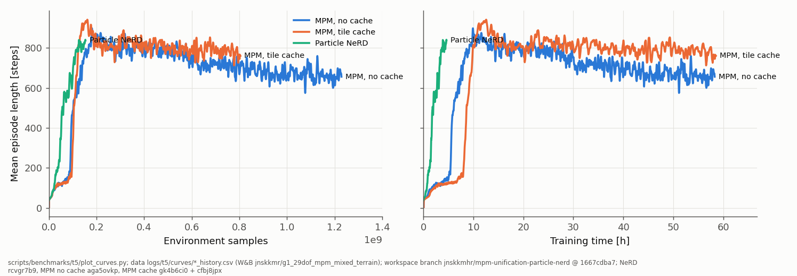
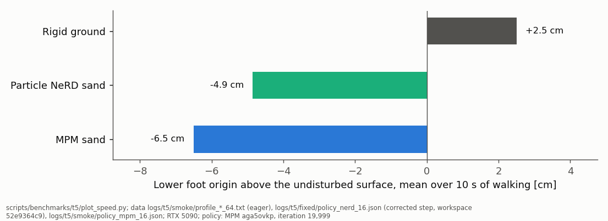

A G1 walking policy trained on Particle NeRD instead of MPM
Slides built 2026-11-25 08:23 PST. Every result is unchecked. The record is outputs/T5.md. Status: training is running and watched: about iteration 2,650 of 20,000 at 08:35 PST on 2026-11-25; expected to end around 13:00 PST on 2026-11-26.
Particle NeRD now steps the sand of the mixed-terrain G1 task; a physics step is 1.4 x faster than with MPM and the training runs at about twice the MPM rate early on, but the NeRD sand barely yields under the feet (under 1 cm against 9 cm in MPM).
Same task as the MPM reference run aga5ovkp: robot, terrain mix, rewards, PPO, 40 GPUs x 64 environments. Only the sand solver, the sand material (one sand, not randomized) and the particle sampling differ.
The sand step itself is 3.6 x faster (7.6 against 27.4 ms), but rigid collision detection, shared by both tasks, takes 40 ms of every physics step.
Sim-to-sim into MPM, early checkpoint only: the NeRD policy at iteration 2,000 falls on MPM sand (2.4 episode ends per robot in 10 s). The training is still running.
Setup
What was swapped unchecked
Only the sand changes: solver, material and particle sampling; the rest of the task is the reference's.
Training view of the Particle NeRD task (64 environments, 32 on sand; the sand particles are not drawn in the training view, as in the reference). Frame 60 of the video written by the local 4-iteration training test, isaaclab train … --task IsaacContrib-Velocity-G1-29dof-ParticleNeRD-Mixed --num_envs 64 --viz newton_gl --video, RTX 5090, workspace commit 0402c2ba6.
MPM reference (aga5ovkp)
Particle NeRD run
Sand solver
Implicit MPM, streaming pool, sleeping (solver_cfg_no_cache)
Particle NeRD network (local model, checkpoint d4cbed5e…), same streaming pool rule
Sand material
Randomized at reset: density 1000–3000 kg/m³, friction 0.3–0.9, stiffness, yield pressure
One sand: 1600 kg/m³, friction 0.48 (NeRD's training material), not randomized
Particles
Spacing 0.032 m, jitter ±0.025 m, radius and mass from the spawner
Spacing 0.032 m, jitter ±0.0064 m, radius 0.016 m, mass 0.0524 kg (NeRD's training data)
Stepped particles
Awake sand in a 1.2 m box around the pelvis
1,536 particles nearest the feet (of 20,000 per sand environment)
Everything else
Robot, 5 terrain types each once rigid and once sand, curriculum, 24 rewards, terminations, PPO, seed 42, 40 GPUs x 64 environments, 20,000 iterations
the same
How it was checked
scripts/benchmarks/t5/config_diff.py compares the resolved task with the W&B config of aga5ovkp (1,802 entries): 128 differ, all in the groups above or run-time paths. It also showed that the worktree's command config had changed since the reference (standing environments 0.2 → 0.0); the NeRD task uses the reference's 0.2. Files: logs/t5/reference/diff_*_vs_aga5ovkp.json.
Criterion 1
Rollout error against horizon
Not done in this session.
Not done. The request for this night was the combined code and the policy training. Related, measured: in closed loop with the MPM policy the NeRD sand carries the robot with the same tracking error as MPM sand but with almost no sinkage (last slide).
Criterion 2 · speed (GPU time)
Throughput and memory against MPM unchecked
The NeRD sand step is 3.6 x faster than MPM's, but rigid collision detection now takes three quarters of a physics step, so the whole step is only 1.4 x faster.
Time of one physics step by part, measured eagerly (no CUDA graph, device synchronized around every call), zero actions, 64 environments of which 32 on sand, second half of 30 environment steps. Script scripts/benchmarks/t5/profile_step.py and plot_speed.py; data logs/t5/smoke/profile_{mpm,nerd}_64.txt; workspace ~/isaac/worktrees/mpm-unification/IsaacLab-particle-nerd, branch jnskkmhr/mpm-unification-particle-nerd, commit 1667cdba7 (clean); RTX 5090. MPM: task IsaacContrib-Velocity-G1-29dof-MPM-Mixed, physics=solver_cfg_no_cache.
64 environments on one RTX 5090, MPM policy walking, CUDA graph
Particle NeRD
MPM, reference config
Environment step, run 1 [ms]
174.8
325.9
Environment step, run 2 [ms]
172.5
274.4
GPU memory of the process, run 2 [MiB]
3,440
17,392
Training on OSMO (W&B Perf/*)
Particle NeRD
MPM aga5ovkp
GPUs x environments
40 x 64 (NVIDIA L40)
40 x 64 (NVIDIA L40S)
Iterations so far
2,495
20,000
Mean time per iteration so far [s]
6.66
10.49 (whole run)
MPM over the same iterations [s]
12.34
Time per iteration (collection plus learning) and samples per second of all GPUs against samples, rolling mean over 50 iterations. Script scripts/benchmarks/t5/plot_curves.py; data logs/t5/curves/*_history.csv (W&B); workspace ~/isaac/worktrees/mpm-unification/IsaacLab-particle-nerd, branch jnskkmhr/mpm-unification-particle-nerd, commit 1667cdba7 (clean). The MPM runs used L40S (no cache) and L40S then L40 (cache); the NeRD run uses L40.Conditions and limits
The MPM step time differs by 19% between two identical local runs (the reference config draws the sand material at random at every reset); the NeRD time by 1%.
The eager profile is slower than training and the robots are falling (zero actions); the shares are indicative.
Iteration time depends on the training stage (resets are expensive and episodes are short at the start), so NeRD and MPM are compared over the same iterations.
MPM out-of-memory point by environment count: not measured.
Criterion 3
Break-even
Not done.
Not done. Found so far: the network training of the bundled checkpoint ran about 30.6 h on 4 x L40 (about 122 GPU hours; workflow particle-nerd-local-v11-train-1 or …-restwin-train-1, not determined which). The GPU count of the data generation workflows was not read.
Criterion 4 · reward curves
Learning curves against MPM unchecked
After 2,495 of 20,000 iterations the NeRD run is at reward 144.9 (MPM at the same iteration: 95.8); the run is not finished.

Mean episode reward against environment samples (left) and against training time (right; the sum of collection and learning time of every iteration), rolling mean over 50 iterations. Particle NeRD: W&B rcvgr7b9 (OSMO g1-nerd-mixed-no-cache-2, 40 x L40). MPM without cache: aga5ovkp (40 x L40S). MPM with tile cache: gk4b6ci0 continued by cfbj8jpx (still running). Script scripts/benchmarks/t5/plot_curves.py; data logs/t5/curves/*_history.csv; workspace ~/isaac/worktrees/mpm-unification/IsaacLab-particle-nerd, branch jnskkmhr/mpm-unification-particle-nerd, commit 1667cdba7 (clean).The same curves over the part of the training that the Particle NeRD run has reached (1.5 x its samples).Episode length, tracking error, terrain levelMean episode length over the part reached so far.

Mean episode length; same runs and script.Velocity tracking error (W&B Metrics/base_velocity/error_vel_xy); same runs and script.Mean terrain level of the curriculum; same runs and script.
Metrics/success_rate is 0 in every iteration of both MPM runs, so there is no success curve to overlay.
Criterion 5 · sim-to-sim
The NeRD-trained policy in MPM unchecked
At iteration 2,000 of 20,000 the NeRD-trained policy does not transfer to MPM sand: its episodes end 2.4 times per robot in 10 s on MPM sand of its own training material, against none in NeRD and none for an MPM policy of similar training reward.
Sand environments, 10 s
in Particle NeRD
in MPM, same sand
NeRD policy, iteration 2,000
0.00 ends, error 0.43 m/s, reward 0.200 per step
2.38 ends, error 0.65 m/s, reward 0.094 per step
MPM policy, iteration 3,000 (similar training reward)
0.12 ends, error 0.42 m/s, reward 0.198 per step
0.00 ends, error 0.59 m/s, reward 0.174 per step
Episode ends per robot, velocity tracking error and reward per step on the task's own commands: 16 environments (8 on sand), 500 steps, terrain level 0, sand 1600 kg/m³ and friction 0.48, one run each. On the rigid columns no episode ended in any of the four runs. Script scripts/benchmarks/t5/nerd_smoke.py; data logs/t5/smoke/{nerd2000,mpm3000}_in_{nerd,mpm}_16.json; RTX 5090.
T3's walking test in MPM (scripts/benchmarks/t3/eval_walk.py, 1.0 m/s command, 13 s, 5 m to the goal, 0.25 m bed): goals reached and velocity error of all trials. No early checkpoint walks in this test: the NeRD policy at iteration 2,000 (slopes only, 70 trials) and the MPM policy at iterations 2,000 and 2,500 all stand until the time-out (velocity error about 1 m/s, no falls); the final MPM policy reaches the goal. Script scripts/benchmarks/t5/sim2sim_local.sh, sim2sim_table.py; data logs/t5/s2s/ (5 trials x seeds 41 and 42, RTX 5090) and, for the final MPM policy, T3's stored runs logs/t3/final_1/d25 of the unified worktree (10 trials, L40). NeRD policy: W&B rcvgr7b9, model_2000.pt, sha256 e1e8e9f7…. Two runs of the MPM iteration-2,500 policy at +20° failed for lack of GPU memory and are missing.Numbers
Condition
NeRD, iteration 2,000: goals / time-outs / falls, velocity error of all trials [m/s]
MPM, iteration 2,000: goals / time-outs / falls, velocity error of all trials [m/s]
MPM, iteration 2,500: goals / time-outs / falls, velocity error of all trials [m/s]
MPM, final (T3 runs): goals / time-outs / falls, velocity error of all trials [m/s]
beach sand, slope -30
0 / 10 / 0 of 10, 0.96
0 / 10 / 0 of 10, 1.00
0 / 10 / 0 of 10, 1.00
8 / 0 / 2 of 10, 0.74
beach sand, slope -20
0 / 10 / 0 of 10, 0.97
0 / 10 / 0 of 10, 1.00
0 / 10 / 0 of 10, 1.00
10 / 0 / 0 of 10, 0.17
beach sand, slope -10
0 / 10 / 0 of 10, 0.96
0 / 10 / 0 of 10, 1.00
0 / 10 / 0 of 10, 1.00
10 / 0 / 0 of 10, 0.07
beach sand, slope +0
0 / 10 / 0 of 10, 0.96
0 / 10 / 0 of 10, 1.00
0 / 10 / 0 of 10, 1.00
10 / 0 / 0 of 10, 0.05
beach sand, slope +10
0 / 10 / 0 of 10, 0.95
0 / 10 / 0 of 10, 1.00
0 / 10 / 0 of 10, 1.00
10 / 0 / 0 of 10, 0.06
beach sand, slope +20
0 / 10 / 0 of 10, 0.96
0 / 10 / 0 of 10, 1.00
not run
10 / 0 / 0 of 10, 0.08
beach sand, slope +30
0 / 10 / 0 of 10, 0.97
0 / 10 / 0 of 10, 1.00
0 / 5 / 0 of 5, 1.00
10 / 0 / 0 of 10, 0.23
level sand, 3000 kg/m³, friction 0.70
not run
0 / 10 / 0 of 10, 1.00
0 / 10 / 0 of 10, 1.00
10 / 0 / 0 of 10, 0.05
level sand, 2000 kg/m³, friction 0.90
not run
0 / 10 / 0 of 10, 1.01
0 / 10 / 0 of 10, 1.01
10 / 0 / 0 of 10, 0.05
level sand, 2000 kg/m³, friction 0.70
not run
0 / 10 / 0 of 10, 1.00
0 / 10 / 0 of 10, 1.00
10 / 0 / 0 of 10, 0.05
level sand, 2000 kg/m³, friction 0.50
not run
0 / 10 / 0 of 10, 1.00
0 / 10 / 0 of 10, 1.00
10 / 0 / 0 of 10, 0.06
level sand, 1000 kg/m³, friction 0.70
not run
0 / 10 / 0 of 10, 1.00
0 / 10 / 0 of 10, 1.00
10 / 0 / 0 of 10, 0.05
level sand, 500 kg/m³, friction 0.90
not run
0 / 10 / 0 of 10, 1.00
0 / 10 / 0 of 10, 1.00
10 / 0 / 0 of 10, 0.06
Criterion 6
What NeRD was trained on, and where the task leaves it unchecked
NeRD is extrapolating in every sand environment: it never saw a foot load, a tilted floor, slopes above 10° or the task's waves.
NeRD training data
Mixed-terrain task with NeRD
Material
one dry sand: 1600 kg/m³, friction 0.48, no cohesion
the same (task reduced to it); the MPM policy saw 1000–3000 kg/m³, friction 0.3–0.9
Bed
2.0 x 1.2 x 0.30 m in a tray with a horizontal floor
pool of 1.6 x 1.6 x 0.25 m that follows the pelvis; the floor is the terrain
Surface
flat; plane tilted ±10°; wave of 0.06 m amplitude, 1.2 m long
layer of constant depth on slopes up to 22.9°, waves up to 0.4 m amplitude, steps of 2–8 cm
Bodies
one box, cube, sphere or cylinder of 0.84–4.4 kg: pushed, pressed, dropped, resting
two feet of a walking 35 kg humanoid
Discretization
particle spacing 0.032 m, MPM voxel 0.04 m, 5 ms
the same
Source: scripts/neural/scene.py, dataset.py and the checkpoint's stored config in ~/isaac/IsaacLab-particle-nerd (commit c83f1b0b8); task side from the W&B config of aga5ovkp.
Caveat · fidelity
The NeRD sand is much firmer than the MPM sand it replaces unchecked
With the same sand and the same policy, the feet sink about 9 cm in MPM and under 1 cm in NeRD, which is within 0.3 cm of rigid ground.

MPM policy aga5ovkp (iteration 19,999) walking for 10 s with the task's commands, 16 environments (8 on sand, 8 on rigid ground), terrain level 0, sand 1600 kg/m³ and friction 0.48 in both simulators. The foot origin is about 3.5 cm above the sole. Script scripts/benchmarks/t5/nerd_smoke.py, plot_speed.py; data logs/t5/smoke/policy_{nerd,mpm}_16.json; workspace ~/isaac/worktrees/mpm-unification/IsaacLab-particle-nerd, branch jnskkmhr/mpm-unification-particle-nerd, commit 1667cdba7 (clean); RTX 5090.Numbers
Particle NeRD sand
MPM sand
Rigid ground
Lower foot origin above the surface [cm]
+2.2
-6.5
+2.5
Pelvis height above the surface [m]
0.732
0.643
0.707
Vertical foot force [N]
349
346
365
Velocity tracking error [m/s]
0.119
0.122
0.054
Particles displaced by more than 2 cm, per sand environment (8 environments, 5 s)
18
2,228
Largest downward particle displacement [cm]
3.7
18.8
The training uses the wrench solver settings of the G1 Particle NeRD example as they are.
Caveat · fidelity, cause
Why the NeRD sand does not yield unchecked
The mean vertical force is right (the robot's weight in both), but NeRD delivers it with the sole at the surface, where MPM gives a quarter of it; MPM builds it up over 6 to 10 cm of sinkage.
Left: mean vertical sand force on one foot in 1 cm bins of the height of the foot origin above the undisturbed surface (the sole is 3.5 cm below the origin; dashed line: sole at the surface). Right: where the loaded samples (above 20 N) are. Same policy (MPM aga5ovkp, iteration 19,999), commands and seed in both simulators, 16 environments (8 on sand), 500 steps, sand 1600 kg/m³ and friction 0.48. Script scripts/benchmarks/t5/nerd_smoke.py --trace, fidelity_report.py; data logs/t5/fidelity/trace_{nerd,mpm}.npz; workspace ~/isaac/worktrees/mpm-unification/IsaacLab-particle-nerd, branch jnskkmhr/mpm-unification-particle-nerd, commit 1667cdba7 (clean); RTX 5090.
The model. With the wrench solver weakened so that the feet pass 12 to 17 cm into the bed, 14 to 82 particles per environment are displaced by more than 2 cm, against about 2,200 in MPM with the feet 6.5 cm deep. The network leaves the sand in place under a foot. It was trained on single objects of 0.8 to 4.4 kg (box, cube, sphere, cylinder; pushed, pressed, dropped, resting) on a 2.0 x 1.2 x 0.3 m bed (flat, ±10° slope, 6 cm wave), never on a foot load.
The coupling. The wrench is computed from the particles near the foot with an effective mass of 30 particle masses, so particles that do not move still carry the full weight, and the force starts about 2 cm before the sole reaches the surface. Lowering that scale lets the feet sink but the sand then stops carrying the robot (76 N of about 340 N at a scale of 3).
Not a setting. Stepping all 20,000 particles or switching sleeping off changes the foot height by about 1 cm; time step, particle spacing and material are those of the training data.
Not done / caveats
What weakens these results
The policy is still training and the NeRD sand is firmer than MPM sand.
Training not finished. training is running and watched: about iteration 2,650 of 20,000 at 08:35 PST on 2026-11-25; expected to end around 13:00 PST on 2026-11-26.
Two changes at once. The NeRD policy sees one sand, the MPM policy saw a range. A difference between the policies is not attributable to the simulator alone.
The NeRD sand does not yield (previous slide), so the policy does not learn to walk in sinking sand.
Different GPU type. NeRD on L40, the no-cache MPM reference on L40S.
A fault that was worked around, not explained. One rank of the first full run hit a CUDA illegal memory access (environment seed 54, reproducible locally). CUDA graphs recorded after the first environment step faulted on replay; they are now all recorded right after the first physics step.
Infrastructure. The nodes of isaac-lab-l40-06 cannot reach the OSMO data storage; the code is shipped as a W&B artifact (jnskkmr/t5_code_bundles) and checkpoints exist on W&B only.
No cache counterpart. A tile cache for the neural solver was not built.
Not done: rollout error (criterion 1), break-even (criterion 3), MPM out-of-memory point, hardware.